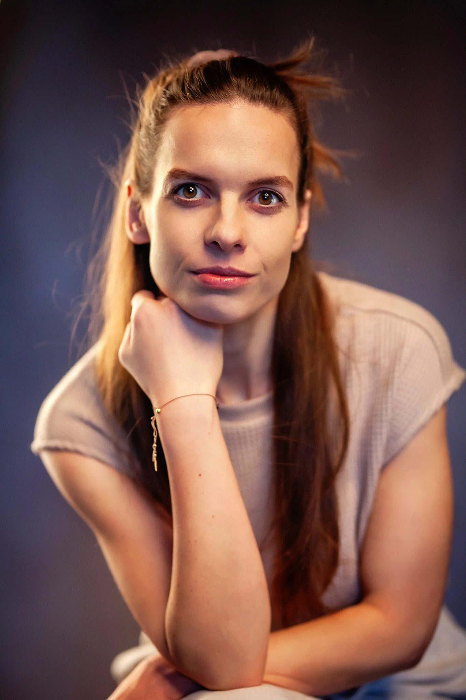

Strefa masażu Martyna Liżewska
O MNIE

Mam na imię Martyna, praca z Ciałem to moja pasja. Z tego powodu zdecydowałam się na studia na kierunku Fizjoterapia. Po nich zajęłam się pracą typowo kliniczną, leczniczą. Pracowałam w centrum medyczno-rehabilitacyjnym oraz zakładzie opiekuńczo-leczniczym. Zmęczyło mnie jednak ograniczenie czasowe i brak narzędzi aby w pełni móc pomagać. Przez przypadek (lub i nie, bo przecież przypadków nie ma) trafiłam do Art SPA w Zamku Topacz pod Wrocławiem, gdzie masaż był czymś więcej niż pracą manualną na poziomie mięśni. Moje serducho od razu poczuło ten klimat i zakochałam się w takiej formie pracy z ciałem człowieka. Od tamtej pory rozwijam się w tym kierunku, bo widzę jak ogromny potencjał ma odpoczynek połączony z odpowiednią pracą na tkankach. Jak bardzo to, co dzieje się w ciele, połączone jest z emocjami. Dużo lepsze efekty można uzyskać łącząc rozluźnienie nie tylko mięśni, ale i „ducha”. Swoje doświadczenie przenoszę i rozwijam również w Lava e Sal, SPA w Radisson Blu w Ostródzie. Całość podkręcam przez nieustający rozwój, między innymi szkoleniami z: masażu balijskiego, tkanek głębokich, funkcyjnego, poprzecznego czy pracy ze stawem skroniowo-żuchwowym. W planie mam dużo więcej.
W zrozumieniu i poznaniu ludzkiego ciała pomogły mi nie tylko studia, które dały mi przede wszystkim wiedzę merytoryczną i solidne podstawy anatomii, ale również moja inna pasja - taniec. Tańczyłam od zawsze, różne style. Na dłużej zatrzymał mnie taniec współczesny i teatr tańca. Teraz łączę wiedzę, pasję i podejście do człowieka z szacunkiem na jaki zasługuje.
Zapraszam do obserwowania mojego profilu na Facebooku. Znajdziecie tam treści nie tylko dotyczące moich usług. Będę też dzielić się wiedzą z zakresu szeroko pojętego zdrowia, dbania o siebie i psychosomatyki, czyli emocji i ich wpływie na nasze ciała.